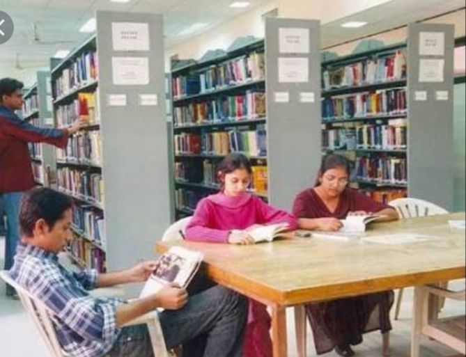
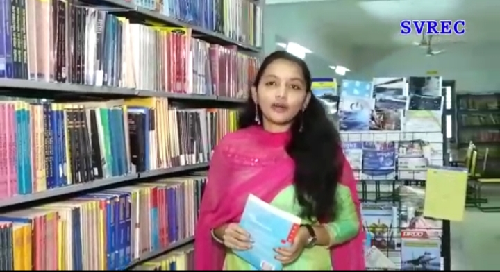

The college library is fully automated with koha Software with Barcode System.The library is using koha Software for the automation of library operations like circulation, opac.
Staff and students are permitted to use the internet facility for the purpose of research, paper publication and other information etc.
The digital library is providing internet facility to all the students and staff with 20 systems.
Book Bank section is maintained in the library for the benefit of SC & ST category students.
All the SC & ST category students are allowed to borrow 05 books per head from the Book Bank section in addition to the main library borrowed by them.
The Library has membership for DELNET (Developing Library Network, New Delhi) and can access 5380 libraries of bibliographic databases and periodicals throughout the nation and some of the SAARC countries.
DELNET aims to collect, store and disseminate information besides offering computerized services to users.
It is very much useful for students, Researchers and Faculty members in resource sharing through the Inter Library Loan and document delivery facilities at the national and international level.